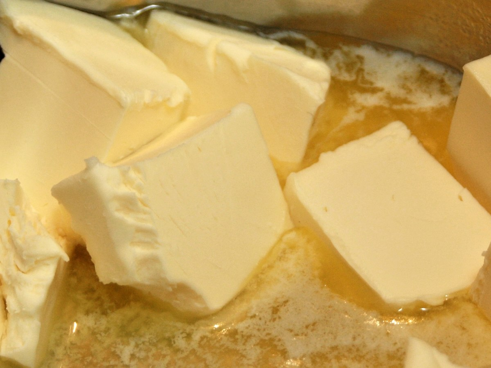

Salted Brown Butter Cirspy Treats by Smitten Kitchen

Description
This is a guilty pleasure. One of the most delicious and rewarding treats ever! You will definitely want to make
a double batch of these treats. Your future self will thank you.
Here is the original recipe.
Ingredients
- 1/2 cup (4 ounces or 115 grams) unsalted butter, plus extra for the pan
- 1 10-ounce (285-gram) bag marshmallows
- Heaping 1/4 teaspoon coarse sea salt
- 6 cups (160 grams) crispy rice cereal (about half a 12-ounce box)
Directions
- Butter (or coat with non-stick spray) an 8-inch square cake pan with 2-inch sides.
- In a large pot, melt butter over medium-low heat. It will melt, then foam, then turn clear golden and finally start to turn brown and smell nutty. Stir frequently, scraping up any bits from the bottom as you do. Don’t take your eyes off the pot as while you may be impatient for it to start browning, the period between the time the butter begins to take on color and the point where it burns is often less than a minute.
- As soon as the butter takes on a nutty color, turn the heat off and stir in the marshmallows. The residual heat from the melted butter should be enough to melt them, but if it is not, turn it back on low until the marshmallows are smooth.
- Remove the pot from the stove and stir in the salt and cereal together. Quickly spread into prepared pan. I liked to use a piece of waxed or parchment paper that I’ve sprayed with oil to press it firmly and evenly into the edges and corners, though a silicon spatula works almost as well.
- Let cool, cut into squares and get ready to make new friends.